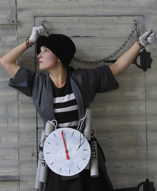
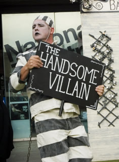

Bash Street Theatre Company
Bash Street Theatre Company (01736 360795)
35 Belgravia Street, Penzance, TR18 2BL
www.bashstreet.co.uk
Bash Street was first launched in front of a 3,000-strong audience in the French town of Morlaix in 1991 as part of 'Les Arts dans la Rue' international street festival. This first show, a compilation of sketches involving circus skills, live music and silent comedy, proved so popular that it created a style for the company that still exists today.
Over the years the company has built a reputation for inventive and fast-moving comic-strip shows.
Since 1991 Bash Street have performed to an estimated 300,000 people. They have been delighting audiences, both young and old, with their unique style of circus-theatre at major festivals throughout the UK, as well as in France, Belgium, Luxembourg, Germany, Austria, Spain, Bulgaria, Poland, Japan and Hong Kong.
REVIEW EXTRACTS
‘This is a very clever, witty and well thought out show… kept young and old entranced for a full hour.’ Lyn Gardner, The Guardian
‘The best realised and most enjoyable show… a well-crafted, well-performed, funny and engaging street theatre show.’ Dorothy Max Prior, Total Theatre Magazine
|

|

|
 |
|